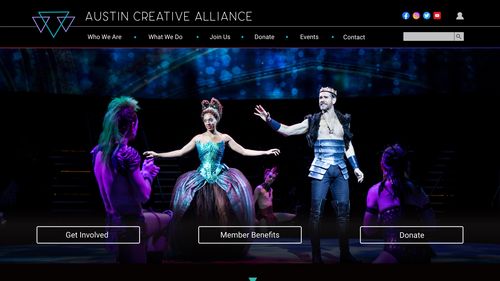

Born in Chicago, this lifelong artist began his love for art as a painter.
Moving forward, he studied photography, graphic design, and marketing.
After working as a photographer for 15 years, he changed his
concentration to the digital arts. Currently, he works as a UX/UI designer.
- - Worked as a fashion photographer in Dallas
- - Pround father of a Shiba Inu, named Eevee
- - Loves to scuba dive

Overview:
For this project, my team worked to redesign the Austin Creative Alliance website.
Click to view full project